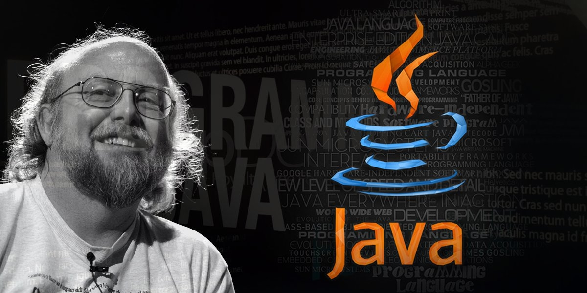

Создание Java
Джеймс Гослинг создал язык Java в рамках проекта Green в Sun Microsystems, начавшегося в 1991 году, с целью создать универсальный и безопасный язык для электронных устройств. Изначально называвшийся Oak, язык был переименован в Java в честь сорта кофе, а в 1995 году была выпущена первая общедоступная версия. Ключевой особенностью Java стала возможность писать код один раз и запускать его на любой платформе («Write Once, Run Anywhere»), реализованная с помощью виртуальной машины Java (JVM).

История создания
Изначально язык назывался Oak («Дуб»), разрабатывался Джеймсом Гослингом для программирования бытовых электронных устройств. Из-за того, что язык с таким названием уже существовал, Oak был переименован в Java[6]. Назван в честь марки кофе Java, которая, в свою очередь, получила наименование одноимённого острова (Ява), поэтому на официальной эмблеме языка изображена чашка с горячим кофе. Существует и другая версия происхождения названия языка, связанная с аллюзией на кофемашину как пример бытового устройства, для программирования которого изначально язык создавался. В соответствии с этимологией в русскоязычной литературе с конца двадцатого и до первых лет двадцать первого века название языка нередко переводилось как Ява, а не транскрибировалось. В результате работы проекта мир увидел принципиально новое устройство, карманный персональный компьютер Star7[7], который опередил своё время более чем на 10 лет, но из-за большой стоимости в 50 долларов не смог произвести переворот в мире технологии и был забыт. Устройство Star7 не пользовалось популярностью, в отличие от языка программирования Java и его окружения. Следующим этапом жизни языка стала разработка интерактивного телевидения. Однако в 1994 году стало очевидным, что интерактивное телевидение было ошибкой. С середины 1990-х годов язык стал широко использоваться для написания клиентских приложений и серверного программного обеспечения. Тогда же определённое распространение получила технология Java-апплетов — графических Java-приложений, встраиваемых в веб-страницы; с развитием возможностей динамических веб-страниц в 2000-е годы технология стала применяться редко. В веб-разработке применяется Spring Framework; для документирования используется утилита Javadoc.